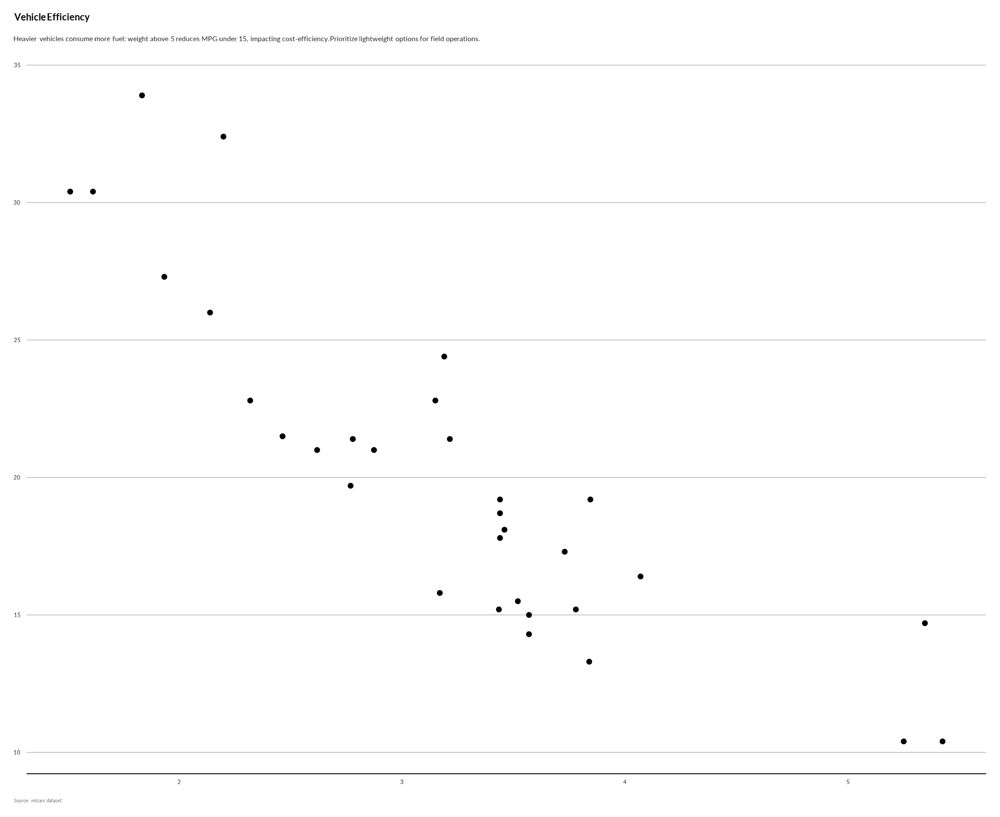

library(iati)
#> Warning: replacing previous import 'cowplot::align_plots' by
#> 'patchwork::align_plots' when loading 'iati'
#> Warning: replacing previous import 'purrr::flatten_lgl' by 'rlang::flatten_lgl'
#> when loading 'iati'
#> Warning: replacing previous import 'purrr::splice' by 'rlang::splice' when
#> loading 'iati'
#> Warning: replacing previous import 'purrr::flatten_chr' by 'rlang::flatten_chr'
#> when loading 'iati'
#> Warning: replacing previous import 'purrr::flatten_raw' by 'rlang::flatten_raw'
#> when loading 'iati'
#> Warning: replacing previous import 'purrr::flatten' by 'rlang::flatten' when
#> loading 'iati'
#> Warning: replacing previous import 'purrr::flatten_dbl' by 'rlang::flatten_dbl'
#> when loading 'iati'
#> Warning: replacing previous import 'purrr::invoke' by 'rlang::invoke' when
#> loading 'iati'
#> Warning: replacing previous import 'purrr::flatten_int' by 'rlang::flatten_int'
#> when loading 'iati'
#> Warning: replacing previous import 'purrr::discard' by 'scales::discard' when
#> loading 'iati'
#> Warning: replacing previous import 'dplyr::lag' by 'stats::lag' when loading
#> 'iati'
#> Warning: replacing previous import 'dplyr::filter' by 'stats::filter' when
#> loading 'iati'
#> Warning: replacing previous import 'rlang::as_list' by 'xml2::as_list' when
#> loading 'iati'
#> Warning: replacing previous import 'stats::filter' by 'dplyr::filter' when
#> loading 'iati'Using Language Models to build data stories
clean_llm_response
response <- "<think>
First, I'm a humanitarian data visualization expert. My role includes extracting insights
from visualizations, creating accessible narratives, highlighting patterns relevant to aid
efforts, using clear language with emotional resonance.
Aligning with constraints: Use plain language, be concise and impactful. Don't rehash
every detail; build narrative depth around 2 key insights maximum in under 30 tokens.
</think>
This visualization tracks a relationship potentially critical for humanitarian logistics:
higher fuel consumption versus increased weight. 车辆设计"
clean_llm_response(response)
#> [1] "This visualization tracks a relationship potentially critical for humanitarian logistics: higher fuel consumption versus increased weight."generate_plot_story
library(ggplot2)
p <- ggplot(mtcars, aes(x = wt, y = mpg)) +
geom_point() +
unhcrthemes::theme_unhcr(grid = "Y", axis = "X", axis_title = FALSE) +
labs(title = "Vehicle Efficiency",
subtitle = "Fuel consumption vs weight",
caption = "Source: mtcars dataset")
generate_plot_story(p, provider = "ollama", model = "deepseek-r1")
#> [1] "Lighter vehicles show better fuel mileage. This chart demonstrates a clear inverse relationship between weight and fuel economy. Funders should prioritize projects showcasing this efficiency potential for cost-effective aid delivery. Weight reduces by 0.3% per unit save, while MPG increases dramatically at lower weights, especially below 25-3k lbs."
story <- generate_plot_story(p, provider = "azure", model = "gpt-4.1-mini", max_tokens = 30)
# To use as subtitle:
p + ggplot2::labs(subtitle = story)